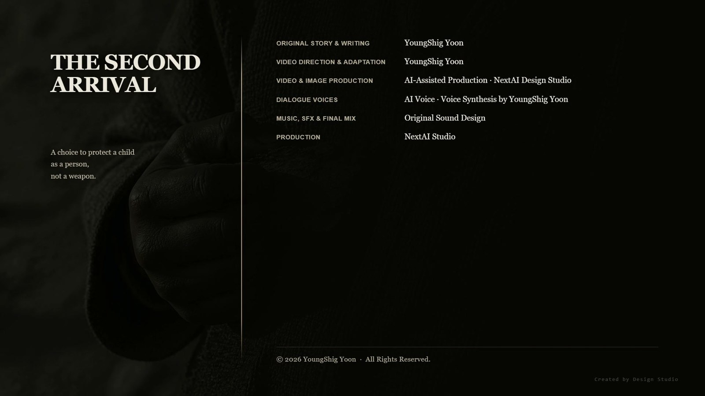

I. Seventeen Years
Earth's atmosphere was heavier than Maldek's.
Even after seventeen years, Las felt that weight anew every morning. He had memorized the gravity value, and his hands moved through the load calculations before he had to think. Yet his body always answered half a beat late. The numbers were not wrong. Something the numbers could not contain was pulling at him.
The highland settlement rested in three tiers. The Chiwoo survivors lived above; the storage structures and observatory built by the Rene occupied the middle slope; and below stood the village of the people who had always lived on this land.
The three tiers did not mix. They shared only the places where water and wind passed through.
Ara sat beside a stone outside the observatory. It was unworked. She had placed it in the same manner as the stones at the Maldek observatory, except that here there were two stones, not seven.
Over seventeen years, Ara had placed markers at twelve sites across Earth.
She had built nothing at any of them. What was built remained, and what remained fixed a direction. That was what Maldek had taught her.
Ara: “Earth is pushing us away.”
Las: “Planets don't push.”
Ara: “Then who does?”
Las: “Gravity.”
Ara: “Gravity is a name.”
Las: “If it has a name, it can be measured.”
They had repeated the same conversation many times over those seventeen years. Not because they could reach no conclusion. Both knew that if they did, one of them would disappear.
II. The Child Who Touched the Stone
Yunseo lived in the village below.
The path she took uphill to fetch water passed beside the observatory, and beside that path stood Ara's two stones. The village elders told her not to touch them. They said only that the stones belonged to the people above.
Yunseo was twelve, and whenever someone told her not to touch something, she heard a question: why?
That day she set down her water bucket and placed a hand on the stone.
It was cold. That should have been all.
But beneath her palm, something acquired a direction.
It was not a sound. It was not an image. Later, Yunseo could describe it in only one sentence.
It hurts less if you go that way.
She lifted her hand. The direction vanished. She touched the stone again. The direction returned.
Inside the observatory, Ara opened her eyes.
For seventeen years, none of the markers on Earth had answered anyone. They were connected to the Chiwoo resonance network, and humans did not possess a neural structure capable of entering it.
But now one of the twelve markers was responding.
III. Two Interpretations
At that moment, Las was reviewing the observatory's alignment records.
The same instant, the alignment values of the Rene storage structure shifted by the smallest amount. Its outer alignment layer recalibrated, and the intermediate load-bearing layer moved minutely to follow.
Las checked the record three times.
Ara: “A human responded to the marker.”
Las: “A human disturbed my alignment layer.”
Ara: “It's the same event.”
Las: “The same event, with different consequences.”
Ara saw possibility. If the human nervous system could enter the Chiwoo resonance network, then for the first time the two peoples might have a way not to disappear. There would be someone to whom their memories could be left.
Las saw error. If a human could disturb the alignment layer, then every structure the Rene had built on Earth would slip a little farther from its reference value each day, simply because humans existed.
Las: “On your side, a door opened. On mine, the axis slipped.”
Ara: “You always look only at what has slipped.”
Las: “If I don't, we get Maldek.”
Ara did not answer.
IV. The Sky Splits Open
Three days later, Earth's night split into three layers.
Black circles opened above the planet's orbit. Not one, but twenty-three, all at once along the edges of the continents. Countless metal rings overlapped around their rims. In their centers, light accumulated like a load. Their interiors were empty.
It was not the emptiness of a space that held nothing. It was a place waiting for something to arrive.
Las read the number of rings and the thickness of the load-bearing layers. He read them three times.
Las: “This isn't a reconnaissance unit.”
Ara: “Then what?”
Las: “Every force that remained on Mars.”
A message appeared on Las's measurement display.
LAS, WAR CRIMINAL OF MALDEK.
ARA, CHIWOO INSURGENT.
AUTHORIZATION TO ARRIVE IS REVOKED.Las: “We've already arrived.”
The reply came at once.
THEN YOU WILL BE REMOVED.
The first photon cannon fired.
No beam crossed the sky. The light simply arrived inside the highlands.
One mountain was cut away along a vertical plane.
The second and third shots followed. The valley below the settlement sank whole into the earth, and the waterway lost its direction and ran backward. Four of the storage structures built over seventeen years vanished at once.
Las tore the outer wall from a surviving storehouse and raised three metal columns. They did not pierce the ground. Aligning with the mineral layer below, they hung in the air.
The outer alignment layer opened. The intermediate load-bearing layer received the light. The photon energy that had arrived through the empty inner layer stopped between the columns.
Las had not blocked the shot.
He had removed the conditions that allowed it to arrive.
Three columns could seal three directions. Twenty-three gates stood open in the sky.
Las: “We have to abandon the lower village. Their attack axis is fixed.”
Ara: “There are people there.”
Las: “That's why we abandon it.”
V. South
Ara placed her hand over the metal plate on the observatory floor.
Before her skin touched it, the mineral beneath the metal gave a low hum.
The twelve markers scattered across Earth woke one by one.
Two.
Three.
All twelve.
The stones gave no orders. They sent only the direction in which the chance of death was slightly lower.
Until now, that signal had always dispersed into empty air. No nervous system on Earth had been able to receive it.
This time was different.
Yunseo stood at the center of the village. Since touching the stone three days earlier, the direction beneath her palm had never entirely gone away.
She took her younger sister's hand.
Then she turned south.
No one told the villagers to go south. Yet in the same instant, they all turned in the same direction.
One person received the direction. The others followed her.
From the observatory, Ara felt it happen.
For the first time in seventeen years, the signal from a marker had found a destination on Earth.
Younger Sister: “Sis, what's up there?”
Yunseo looked at the sky. Metal lines were descending through the clouds.
Yunseo: “That isn't the sky.”
She did not know how she knew the words that followed.
Yunseo: “It's a command breaking through the sky.”
VI. The Vanished Child
The fleet changed tactics.
The great orbital gates closed. In their place, hundreds of smaller gates appeared at once over the mountains, waterways, and village.
They were not buildings. They were three-layered cross-sections suspended in the air. The outer ring measured the terrain, the middle layer absorbed the shock of arrival, and Rene soldiers and automated turrets poured from the empty interior.
High on the mountain, the Chiwoo survivors tried to sense the intent of the attack. They found nothing.
It was not that the Rene soldiers moved without intent. They had entrusted that intent to their machines.
For the first time, Chiwoo foresight went blank.
Then the resonance network overloaded. Twelve markers were pushing out their signals at once, and there was only one receiver.
Yunseo's body stopped.
Her younger sister had not let go, yet Yunseo stood as though she had vanished where she was. Her eyes remained open. She was breathing. But there was no one inside.
Ara ran down the mountain.
Ara: “She went inside.”
Las: “Inside where?”
Ara: “The place we've spent seventeen years building.”
Within the resonance network remained the memories of those who had survived Maldek. A song sung by a mother. The confusion of someone who had lost their body. The silence of someone who remembered the final sea.
One human child had fallen among them.
And hundreds of gates in the sky shuddered at once.
On Las's display, the alignment values were collapsing. The outer rings measured the terrain again, and with each measurement they returned a different value. Automated turrets failed to settle on their targets and aimed three times at the same place.
Las understood why.
A human nervous system was inside the resonance network. The network ran through Earth's mineral layers, crossing the same space as the Rene alignment layer.
As long as the child remained inside, the Rene could arrive nowhere on Earth with precision.
VII. The Return
Ara: “We have to pull her out.”
Las did not look away from the display.
Las: “If we pull her out, alignment returns.”
Ara: “I know.”
Las: “When it does, they'll be able to aim again.”
Ara: “I know that too.”
Twenty-three gates hung between them. One child was holding all of them still.
Las thought of seventeen years before. Standing before Maldek's alignment axis, he had left one value in place instead of deleting it. He had not disobeyed the order then. He had left the result of that order in his own hands.
Now it was the reverse. If he did nothing, they would win.
Las: “That child is a weapon now.”
Ara: “That child is twelve years old.”
Las did not answer. Instead, he began lowering the output of the storage structures.
Ara reached into the resonance network.
To pull Yunseo free, she needed something outside for the child to grasp—something heavy enough to hold, and a memory that was not her own.
Ara took out the heaviest thing she possessed.
The night Maldek folded.
First all sound vanished. Then the continents folded. The sea rose upward, and mountain ranges tore loose from their roots. It was a memory Ara had shown no one in seventeen years.
She placed it inside the resonance network.
Yunseo moved toward the memory. Because it was not hers, she understood it as a marker pointing toward the outside.
But the network would not let her go. The Rene alignment values overlapped the resonance signal and held the child in place.
Las shut down the outer alignment layers one by one.
Each time a layer went dark, one of the columns shielding the settlement from photon fire lost its strength. If he shut down the third column, the entire settlement would lie open.
Las shut down two.
Las: “This is as far as I go.”
Ara: “A little farther.”
Las: “A little farther and everyone dies.”
Ara: “Then this is far enough.”
Ara's resonance entered through the space he had opened.
Yunseo drew a deep breath.
The child returned.
And the alignment values in the sky recovered.
Hundreds of gates turned toward the same direction again. The automated turrets reacquired their targets. The coordinates of the settlement appeared sharp and clear on Las's display.
Las looked at those coordinates and did nothing.
Then the orbital gates began to close.
Not because they had been defeated. While the twenty-three gates stood open, the alignment reference across all of Earth had collapsed once. Rene specifications could not begin a second operation from a broken reference. Every component had been built to respond in the same way.
To establish a new reference, they would have to measure everything from the beginning.
The fleet withdrew. It took the coordinates with it.
Las's exoskeleton split. The load from the darkened alignment layers had returned through his apparatus. He dropped to one knee, but did not fall.
Ara: “How much time do we have?”
Las: “Until they establish a new reference.”
Ara: “How long is that?”
Las: “That's no longer mine to calculate.”
Las opened his alignment record. The display preserved the route by which one child had collapsed the alignment layer across an entire planet.
The route continued underground.
Toward a structure he had not built in seventeen years.
Ara looked toward the village.
Yunseo sat beside her water bucket. In her hand was something thin that was neither paper nor mineral: a strip of bark used for writing in the village.
The child wrote nothing on it.
Instead, she pressed a mark into it with her fingernail.
Once. Then once more, after turning the direction slightly.
Yunseo could not explain why she had turned the second mark. She only felt that without it, no one would know what the first mark pointed toward.
She folded the bark and tucked it inside her clothes.
Through the split in his exoskeleton, Las studied his measurement display. Three words remained on the screen.
ARRIVE
DESTROY
DEFEND
One letter in the third word had bled.
Las did not correct it.
The screen did not go dark. The war was not over.
What they had lost on Maldek was a planet. What began on Earth was a front.
